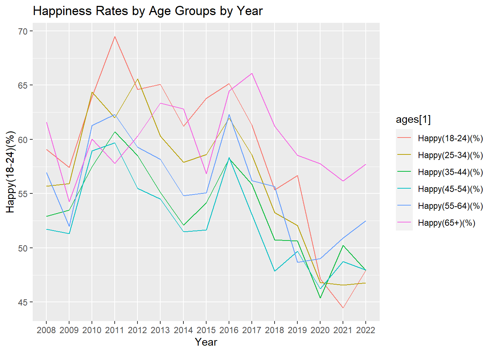

Code
library(tidyverse)── Attaching core tidyverse packages ──────────────────────── tidyverse 2.0.0 ──
✔ dplyr 1.1.4 ✔ readr 2.1.4
✔ forcats 1.0.0 ✔ stringr 1.5.0
✔ ggplot2 3.4.4 ✔ tibble 3.2.1
✔ lubridate 1.9.3 ✔ tidyr 1.3.0
✔ purrr 1.0.2
── Conflicts ────────────────────────────────────────── tidyverse_conflicts() ──
✖ dplyr::filter() masks stats::filter()
✖ dplyr::lag() masks stats::lag()
ℹ Use the conflicted package (<http://conflicted.r-lib.org/>) to force all conflicts to become errorsCode
data <- get(load("final_data.RData"))
ages <- c("Happy(18-24)(%)","Happy(25-34)(%)","Happy(35-44)(%)","Happy(45-54)(%)","Happy(55-64)(%)","Happy(65+)(%)")
year_ages <- data |> select(Year, ages)Warning: Using an external vector in selections was deprecated in tidyselect 1.1.0.
ℹ Please use `all_of()` or `any_of()` instead.
# Was:
data %>% select(ages)
# Now:
data %>% select(all_of(ages))
See <https://tidyselect.r-lib.org/reference/faq-external-vector.html>.Code
year_ages Year Happy(18-24)(%) Happy(25-34)(%) Happy(35-44)(%) Happy(45-54)(%)
1 2008 59.09000 55.69000 52.90000 51.74000
2 2009 57.41000 55.92000 53.49000 51.31000
3 2010 63.93000 64.36000 57.49000 58.93000
4 2011 69.50000 62.00000 60.70000 59.70000
5 2012 64.60000 65.60000 58.50000 55.50000
6 2013 65.09000 60.29000 55.13000 54.49000
7 2014 61.20000 57.90000 52.10000 51.50000
8 2015 63.78700 58.60600 54.17800 51.66800
9 2016 65.13400 61.96100 58.22800 58.34400
10 2017 61.30150 58.57135 55.85570 53.08768
11 2018 55.35172 53.24284 50.74637 47.84929
12 2019 56.67982 52.04614 50.64638 49.70393
13 2020 47.14917 46.81024 45.37726 46.22153
14 2021 44.48447 46.57319 50.22658 48.75430
15 2022 47.90992 46.76606 47.93897 47.96122
Happy(55-64)(%) Happy(65+)(%)
1 56.93000 61.60000
2 51.99000 54.27000
3 61.28000 60.03000
4 62.30000 57.80000
5 59.30000 60.30000
6 58.15000 63.36000
7 54.80000 62.80000
8 55.07000 56.84000
9 62.30000 64.47600
10 56.21379 66.09250
11 55.65419 61.19950
12 48.67123 58.54024
13 48.99747 57.74405
14 50.91547 56.16328
15 52.49462 57.72237Code
ggplot(year_ages, aes(x = Year)) +
geom_line(aes(y =`Happy(18-24)(%)`, color = ages[1], group=1)) +
geom_line(aes(y =`Happy(25-34)(%)`, color = ages[2], group=1)) +
geom_line(aes(y =`Happy(35-44)(%)`, color = ages[3], group=1)) +
geom_line(aes(y =`Happy(45-54)(%)`, color = ages[4], group=1)) +
geom_line(aes(y =`Happy(55-64)(%)`, color = ages[5], group=1)) +
geom_line(aes(y =`Happy(65+)(%)`, color = ages[6], group=1)) +
labs(title = "Happiness Rates by Age Groups by Year")
Code
#GRAPH---2
rate_of_change <- c()
for (x in (1:14)) {
ratio <- ((as.numeric(final_data[(x + 1), "Literate(%)"]) * 100) / as.numeric(final_data[x, "Literate(%)"])) - 100
print(ratio)
rate_of_change <- c(rate_of_change,ratio)
}[1] 0.8991631
[1] 2.030331
[1] 1.559983
[1] 0.8646199
[1] 0.3549419
[1] 0.1920811
[1] 0.1695208
[1] 0.286889
[1] 0.2866629
[1] 0.2788856
[1] 0.335547
[1] 0.2194389
[1] 0.1966283
[1] 0.1742341Code
rate_of_change [1] 0.8991631 2.0303310 1.5599834 0.8646199 0.3549419 0.1920811 0.1695208
[8] 0.2868890 0.2866629 0.2788856 0.3355470 0.2194389 0.1966283 0.1742341Code
x_axis = c("2008-2009","2009-2010","2010-2011","2011-2012","2012-2013","2013-2014","2014-2015","2015-2016","2016-2017","2017-2018","2018-2019","2019-2020","2020-2021","2021-2022")
mode(x_axis)[1] "character"Code
row_names <- c("rate_of_change", "x_axis")
df <- data.frame(rate_of_change, x_axis)
ggplot(df, aes(x = x_axis, y = as.numeric(rate_of_change))) + geom_col() +
labs(title = "Rate of Increase in Literacy by Years") +
xlab("Rate of Change") +
ylab("Year") +
theme(axis.text.x = element_text(angle = 90, vjust = 0.5, hjust=1))Code
#GRAPH---3
data$`Happy(55-64)(%)`[9] <- 62.3001
happy_18_24_pop <- sapply(data$`Happy(18-24)(%)`, function(x) {x * data$`Pop(18-24)`[which(data$`Happy(18-24)(%)` == x)]})
happy_25_34_pop <- sapply(data$`Happy(25-34)(%)`, function(x) {x * data$`Pop(25-34)`[which(data$`Happy(25-34)(%)` == x)]})
happy_35_44_pop <- sapply(data$`Happy(35-44)(%)`, function(x) {x * data$`Pop(35-44)`[which(data$`Happy(35-44)(%)` == x)]})
happy_45_54_pop <- sapply(data$`Happy(45-54)(%)`, function(x) {x * data$`Pop(45-54)`[which(data$`Happy(45-54)(%)` == x)]})
happy_55_64_pop <- sapply(data$`Happy(55-64)(%)`, function(x) {x * data$`Pop(55-64)`[which(data$`Happy(55-64)(%)` == x)]})
happy_65_pop <- sapply(data$`Happy(65+)(%)`, function(x) {x * data$`Pop(65+)`[which(data$`Happy(65+)(%)` == x)]})
happy_pop_df <- data.frame(happy_18_24_pop, happy_25_34_pop, happy_35_44_pop, happy_45_54_pop, happy_55_64_pop, happy_65_pop)
happy_pop_total_df <- happy_pop_df |> mutate(Total_Happy = rowSums(happy_pop_df))
happy_pop_total_ratio <- sapply(as.numeric(happy_pop_total_df$Total_Happy), function(x) {x / as.numeric(data$`Pop(Total)`[which(happy_pop_total_df$Total_Happy == x)])})
print(happy_pop_total_ratio) [1] 38.24621 37.41853 42.42036 43.33331 42.70288 41.59463 39.83181 40.27278
[9] 43.78367 41.59795 38.40338 37.92216 35.04362 36.03976 36.52276Code
ggplot(data, aes(x = Year)) +
geom_line(aes(y = as.numeric(`Literate(%)`), color = "red", group=2)) +
geom_line(aes(y = happy_pop_total_ratio, color = "blue", group=1)) +
labs(title = "Literacy and Happiness by Years") + ylab("Literate(%)") +
scale_color_manual(values = c("red", "blue"),
labels = c("Happy Population Total","Literate"))Code
#Pie Plot
happiness_percentages <- data[11, c("Happy(18-24)(%)", "Happy(25-34)(%)", "Happy(35-44)(%)",
"Happy(45-54)(%)", "Happy(55-64)(%)", "Happy(65+)(%)")]
actual_populations <- as.numeric(happiness_percentages)
pie(actual_populations, labels = (c("Happy(18-24)(%)", "Happy(25-34)(%)", "Happy(35-44)(%)","Happy(45-54)(%)", "Happy(55-64)(%)", "Happy(65+)(%)")), main = "Population Distribution by Age Group (2018)")Code
pie_labels <- paste0(round(100 * happiness_percentages/sum(happiness_percentages), 2), "%")
pie(actual_populations, labels = pie_labels , main = "Population Distribution by Age Group (2018)")